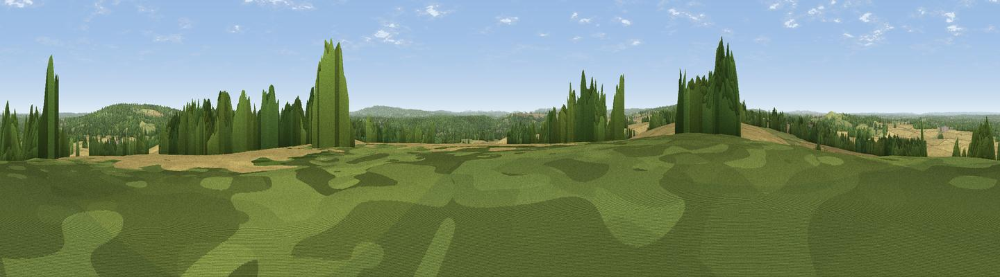

Viewpoint near Crondall
#33982 in England · top 27% of its area beats it · near Crondall · path 138 mWhere it is
The exact computed spot (SU 80925 48075). Click the marker for map links.
Public access: the nearest public right of way is about 138 m away — the final stretch may cross private land. Computed from Natural England's CRoW access layer and OpenStreetMap rights of way — not the legal definitive map. Always verify locally.
The view, rendered

A 360° render of this exact spot computed from the terrain model, tree cover and land cover — summer colours, afternoon light, calibrated against photographs of famous viewpoints. Real trees, hedges and buildings will differ in detail.
The panorama
Grey silhouette: terrain skyline in each direction (720 bearings, Earth curvature and refraction included). Dashed green: skyline with trees (+15 m) and buildings (+8 m) as obstacles. Blue strip: how far the ground is visible on each bearing.
Where the view opens
Wedge length = distance to the farthest visible ground on that bearing (vegetation-aware). Rings at 10, 25 and 50 km.
What fills the view
37% grassland · 31% cropland · 30% woodland · 1% built-up
Angular shares of the visible panorama (visual magnitude), not map area. Landscape diversity 0.50 (0–1 Shannon).
Key numbers
More beautiful places nearby
The staircase of upgrades: each row has a higher view potential than everything closer. Driving times are estimates from straight-line distance, calibrated against real road routing — check an actual route before setting out.
| Place | Direction | Drive | Score |
|---|---|---|---|
| Viewpoint near Ewshot | NNE · 3 km | ~7 min | 46.4 |
| Viewpoint near Upper Hale | NE · 4 km | ~8 min | 46.8 |
| Horsedown Common | W · 4 km | ~10 min | 54.8 |
| Temple of the Four Winds | SE · 16 km | ~28 min | 65.4 |
| Viewpoint near Fernhurst | SSE · 22 km | ~36 min | 75.1 |
| Viewpoint near Buriton | SSW · 29 km | ~46 min | 75.3 |
| Viewpoint near Buriton | SSW · 29 km | ~46 min | 80.0 |
| Beacon Hill | S · 30 km | ~47 min | 85.8 |
51.22614, -0.84248 · source: screening · position refined by local search. Computed location — check access rights before visiting.